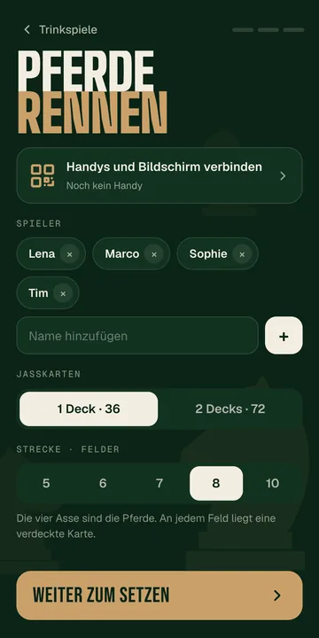
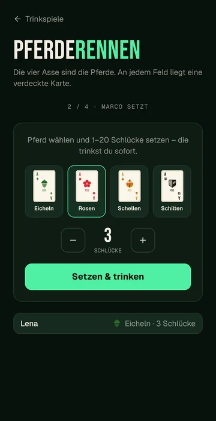
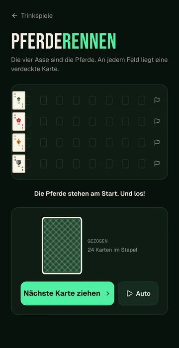
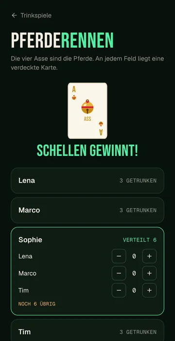

Strecke
Ihr bestimmt, wie viele Felder die Bahn hat. Je länger die Bahn, desto länger das Rennen.
Trinkspiel · Karten
Die vier Asse sind die Pferde. Ihr setzt Schlücke, die Karten entscheiden das Rennen.

Ein ganzes Rennen von der Wette bis zum Ziel, als Video und in Bildern.




Ihr bestimmt, wie viele Felder die Bahn hat. Je länger die Bahn, desto länger das Rennen.
Wer nicht jede Karte selbst ziehen will, lässt das Rennen von allein laufen.
Wetten gebt ihr auf dem eigenen Handy ab, das Rennen läuft live auf allen Geräten.

Zwei Teams, ein Becherdreieck, Chlapf zählt live mit.

Teams, Tische, Resultate und Siegerehrung an einem Ort.

Karten raten, Pyramide, dann fährt jemand Bus.

Challenges, Aufgaben, neue Regeln und Geheimaufträge.

Fragen vorlesen, wer's gemacht hat, trinkt.